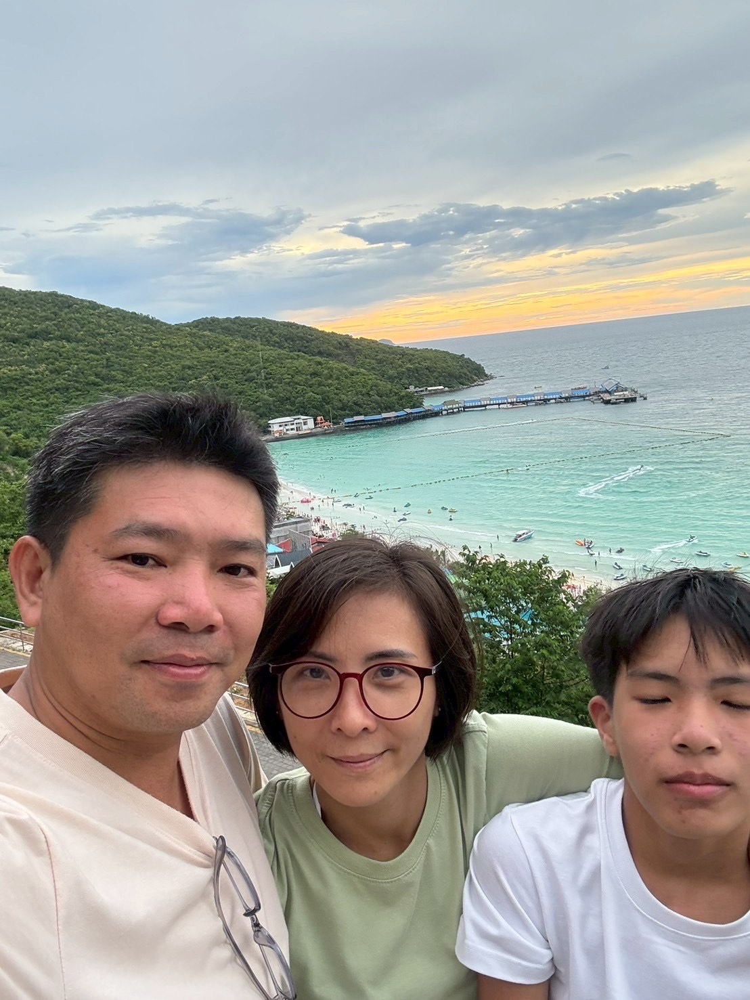

วันแม่แห่งชาติ
ผมรักแม่ที่สุดในโลกเลย
สิ่งที่อยากบอกแม่
แม่...คำสั้น ๆ เพียงหนึ่งพยางค์ แต่กลับเปี่ยมไปด้วยความหมายอันลึกซึ้งยากจะบรรยายได้ครบถ้วน แม่คือผู้หญิงคนแรกที่เรารู้จัก เป็นคนที่ให้ชีวิตเรามา และเป็นคนที่พร้อมจะเสียสละทุกอย่างเพื่อเห็นรอยยิ้มของลูก ตั้งแต่วันแรกที่เราเกิดมา แม่คือคนที่ไม่เคยห่างจากเราไปไหน ดูแล อุ้มชู เลี้ยงดูเราด้วยความรักที่ไม่มีเงื่อนไข ไม่ว่าจะเหนื่อยยากเพียงใด แม่ก็ไม่เคยบ่น ไม่เคยท้อ มีเพียงรอยยิ้มและความห่วงใยที่มอบให้ลูกเสมอ แม่ไม่ใช่แค่คนเลี้ยงดู แต่เป็นครูคนแรกของชีวิต สอนให้เรารู้จักความดี ความอดทน และการให้โดยไม่หวังผลตอบแทน บทเรียนจากแม่นั้นล้ำค่ากว่าคำสอนใดในโลก เพราะเป็นบทเรียนที่มาจากหัวใจของคนที่รักเราที่สุด ในวันที่เราล้ม แม่คือคนแรกที่ยื่นมือเข้ามาพยุง ในวันที่เราท้อแท้ แม่คือกำลังใจที่ไม่มีวันหมดอายุ และในวันที่เราประสบความสำเร็จ แม่คือน้ำตาแห่งความปลาบปลื้มที่อบอุ่นหัวใจที่สุด หลายคนอาจจะไม่ได้พูดคำว่า "รักแม่" บ่อยนัก แต่ความรักที่แท้จริงไม่จำเป็นต้องเอ่ยออกมาทุกครั้ง แค่เพียงการกอด การใส่ใจ และการใช้ชีวิตอย่างมีคุณค่า ก็เป็นการตอบแทนความรักของแม่ได้อย่างดีที่สุด เพราะแม่...คือผู้หญิงที่ยิ่งใหญ่ที่สุดในชีวิต
กลอนวันแม่
ตื่นเช้ามาแม่หุงหาอาหารให้ทุกคนในครอบครัวได้กินอิ่มหนำ
ลูกระลึกพระคุณแม่เป็นประจำ
ลูกจะทำความดีให้แม่ภาคภูมิ
ถึงวันแม่ในวันนี้ที่สิบสอง
น้ำตานองลูกคิดถึงนะแม่จ๋า
แม้วันนี้แม่อาจอยู่ไกลสุดตา
อยู่บนฟ้าลูกไม่เคยลืมพระคุณ
ประนมมือก้มกราบลงบนตัก
ด้วยความรักความเคารพต่อแม่ฉัน
ซึ้งพระคุณอันยิ่งใหญ่มากอนันต์
ใจเบิกบานแสนอบอุ่นวันแม่เอย